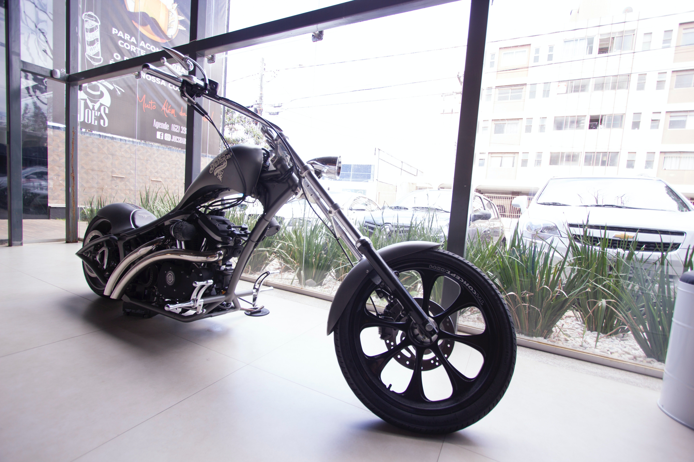

This a dashboard of the New York city Airbnb Market. In this analysis, I looked at the pricing around the year and how prices vary around the 5 boroughs of NYC.
In addition to that, I also took a look at the different apartment types and how often they are listed on the Airbnb platform. This Visualization also carries a lot of insights
that will guide holiday seekers on their budget for accomodation in the city and hosts on how t keep their prices competetive in order to attract customers.

This is an e-commerce centered exploratory analysis of a Superstore. The article is a data report on sales from a retail store called "Superstore."
The report includes visualizations and analysis of the sales data, including sales by category, profit by category, and sales by region. The report also includes a breakdown of the top performing products and
an analysis of the profit and loss data. It also discusses which products the company should focus on during marketing to help improve profit margin.

The article is a report of a project that focused on analyzing sales data for a bike store. The goal of the project was to identify patterns in the data that would help the store optimize its sales and marketing strategy.
The the visualization from project included information on sales by region and customer demographics.

This is an exploratory data analysis that involved the extract, transformation of data from a source before querying on Google's BigQuery platform.
I explored Total cases Vs Total deaths, Death percentage in Nigeria
Likelyhood of dying by contracting Covid-19 in Nigeria, Percentage of cases to population in your country, Countries with the highest infection compared to population and more.

This report was created as a submission to participate in an on going challenge. I used the dataset to create an educative visualization that explains how mankind has explored celestial bodies
since 1957 when the race to space began, to the 2000's when the race to commercialization of space travel is now taking place. I also used the visuals to capture special moments in space travel.

This report captures the customer visit sessions of an e-Commerce startup website. I was able to understand the challenges they face, I spotted trends and created insights from this data.
Additionally, I proposed an approach to improve the low customer conversion situation. If you follow the link embedded in the dashboard, you will see this is a remake of an older viz by me too.
In 2016, Cyclistic launched a successful bike-share offering. Since then, the program has grown to a fleet of 5,824 bicycles that are geotracked and locked into a network of 692 stations across Chicago.
I have used Cyclistic’s historical trip data to analyze and identify trends. To do this, I downloaded 12 months of previous cyclistic data.
I took an in-depth look at these data sets to understand how the two user types groups (Annual members and casual users) make use of the cyclistic bikes differently.
I drew insights and recommended strategies that could assist the marketing team make targeted attempts at expanding customer base.